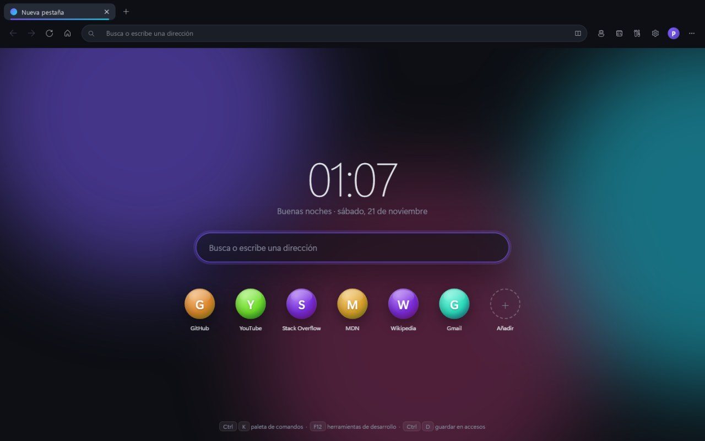
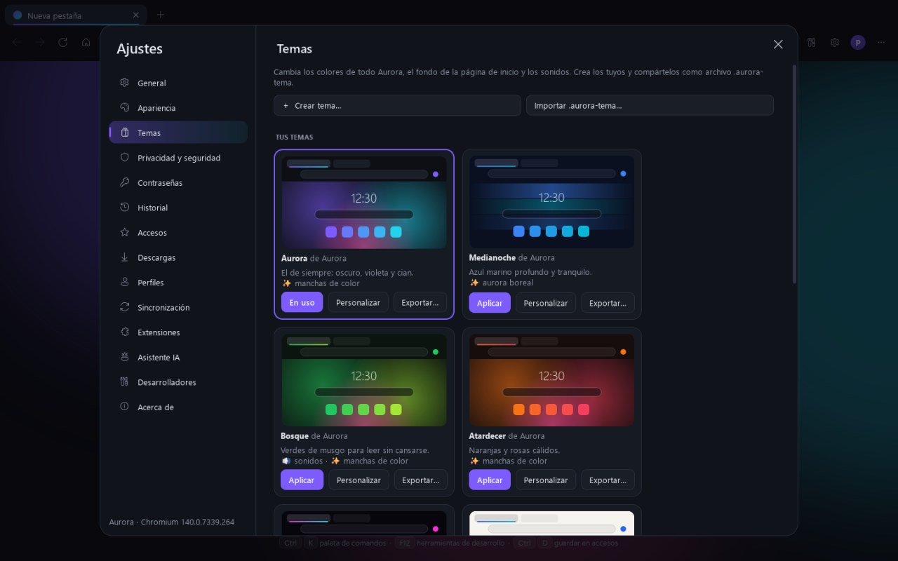
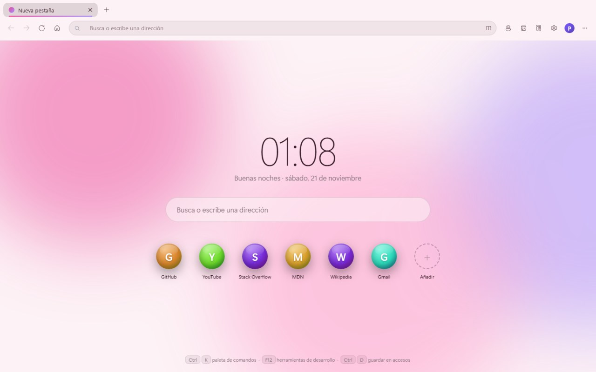
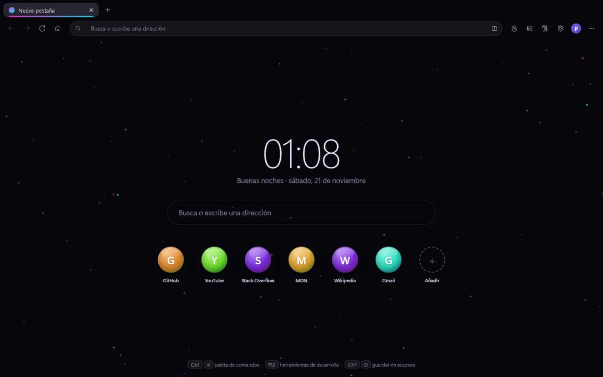
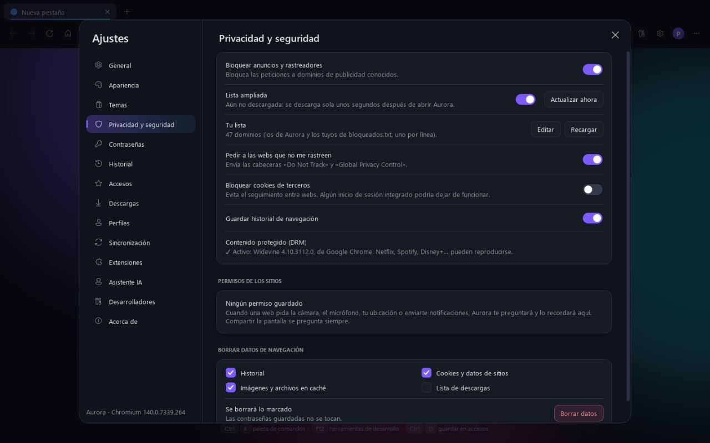
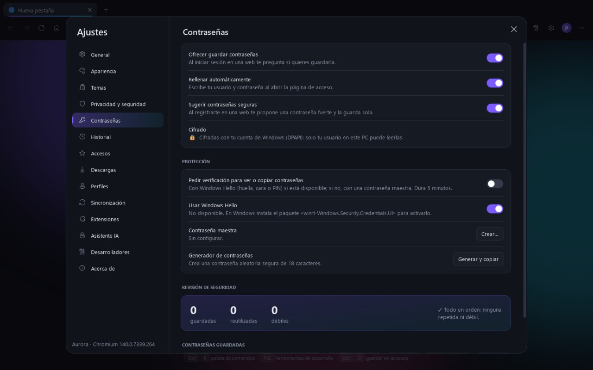
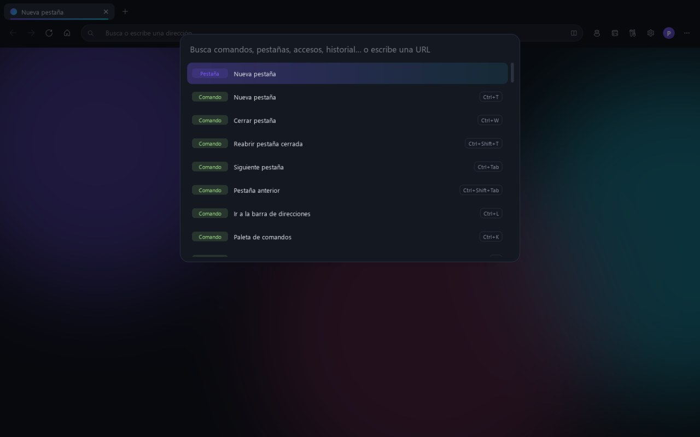

Sin anuncios ni rastreadores
Bloquea unos 76.000 dominios de publicidad y seguimiento, con una lista que se renueva sola cada semana.
Gratis · Software libre · Windows y Linux
Aurora usa el mismo motor que Chrome, pero bloquea anuncios, cifra tus contraseñas y trae herramientas de desarrollo, temas y un asistente con IA. Sin cuentas y sin enviar tus datos a nadie.

Sin instalar extensiones ni crear cuentas.
Bloquea unos 76.000 dominios de publicidad y seguimiento, con una lista que se renueva sola cada semana.
Las guarda y las rellena, te sugiere contraseñas seguras y avisa de las débiles o repetidas. Cifradas con tu sistema.
Siete temas claros y oscuros con fondos animados y sonidos. Crea el tuyo y compártelo.
Inspector, consola, red, cliente de API, auditoría, modo responsive y servidor local con recarga en vivo (F12).
Resume, traduce o explica la página con Claude, ChatGPT, Gemini, Copilot… usando tu propia cuenta.
Cámara, micrófono, ubicación o notificaciones: Aurora te pregunta en cada web y recuerda tu respuesta.
Accesos, historial y contraseñas entre Windows y Linux por tu propia nube (OneDrive, Syncthing…), cifrado.
Separa Personal, Clase o Trabajo, cada uno con sus sesiones. Y ventana de incógnito que no guarda nada.
Te avisa de cada versión nueva y se instala con un clic, comprobando que el archivo es el publicado.
Capturas reales de Aurora.






La última versión, directamente de GitHub.
Windows puede avisar «Windows protegió su PC» porque Aurora es nuevo y no está firmado: pulsa Más información → Ejecutar de todas formas.
Descomprímelo y, en una terminal dentro de la carpeta:
bash instalar-fedora.shPrepara los vídeos MP4 y aparece en Actividades. Se actualiza desde el propio Aurora.
Sí, y es software libre (licencia GNU GPL v3): puedes usarlo, estudiar su código, cambiarlo y compartirlo.
Windows avisa con cualquier programa que aún no es conocido y no está firmado con un certificado de pago.
Pulsa Más información y luego Ejecutar de todas formas. Si quieres comprobar que el archivo es
el original, compara su huella con la del archivo SHA256SUMS.txt de la versión.
Solo en tu ordenador, en la carpeta .aurora de tu usuario. Las contraseñas van cifradas con tu sistema
(DPAPI en Windows, el llavero de GNOME o KDE en Linux). Aurora no tiene servidores ni cuentas.
Sí: en Ajustes → General → Importar pasas marcadores, historial, contraseñas y sesiones de Chrome, Edge, Brave, Chromium o Vivaldi.
Aurora usa el módulo de vídeo protegido de un Chrome o Edge instalado. En Linux con Fedora se ven también los vídeos MP4; con la versión de Windows algunas webs de vídeo protegido pueden no funcionar.
Por ahora no: solo Windows y Linux.